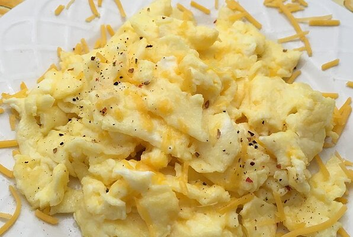

Scrambled eggs

A classic and delicious breakfast!
How to Make Fluffy Moist Scrambled Eggs –
A method for cooking fluffy, moist, flavorful and evenly cooked scrambled eggs. Get great results every time with a few simple tips.
Ingredients:
- 2 eggs
- 2 tablespoons sliced Cheddar cheese
- 2 thin slices ham (Optional)
- 1 teaspoon heavy whipping cream
- 1/2 teaspoon butter
Directions:
- Whisk eggs together in a small bowl until smooth. Mix in Cheddar cheese, ham, and heavy cream.
- Melt butter in a skillet over medium heat. Pour in egg mixture; cook and stir until set but still moist, 3 to 5 minutes.